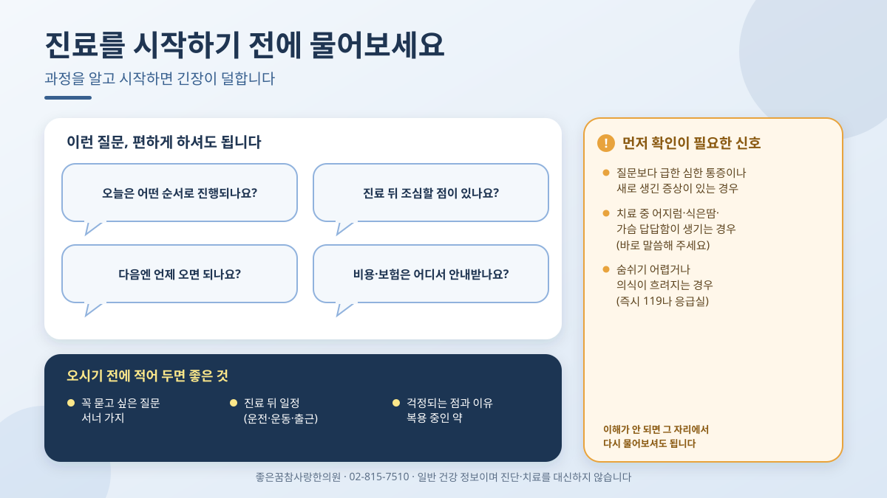

이종호 한의사 감수좋은꿈참사랑한의원 대표원장 (한의사 면허번호 19769)발행 2026-11-23 · 수정 2026-11-25
이 글의 차례
진료를 시작하기 전에 "오늘 어떤 방법으로 진료하나요?", "치료 중 불편하면 어떻게 하나요?", "오늘 이후 조심할 점은 무엇인가요?", "다음에는 언제 오면 되나요?" 네 가지를 물어보시면 대부분의 궁금증이 풀립니다.
진료실에서는 질문이 잘 떠오르지 않으니 휴대폰에 미리 적어 오시는 것을 권합니다. 질문하는 것은 자연스러운 일이며 눈치 보지 않으셔도 됩니다.
왜 미리 질문을 준비하면 좋을까요
- 처음 받는 치료는 과정을 알고 시작하면 긴장이 덜합니다.
- 진료 뒤 조심할 점을 알면 일상에서 불필요한 걱정을 줄일 수 있습니다.
- 다음 방문 시기를 정해 두면 진료가 끊기지 않고 이어집니다.
- 궁금한 점을 바로 풀면 집에 가서 혼자 검색하며 불안해하는 일이 줄어듭니다.
먼저 이렇게 여쭙니다
- 오늘 진료에서 가장 궁금한 점은 무엇인가요?
- 치료에 대해 걱정되는 점(통증, 시간, 부작용 걱정)이 있나요?
- 진료 뒤 바로 해야 하는 일정(운전, 운동, 출근)이 있나요?
- 예전 진료에서 설명이 부족하다고 느꼈던 점이 있나요?
일상에서 먼저 해 볼 수 있는 것
- 궁금한 점을 휴대폰에 적어 오기
- 들은 내용을 짧게 메모하거나 다시 한번 확인하기
- 이해가 안 되는 부분은 그 자리에서 바로 다시 묻기
- 집에 가서 생긴 질문은 다음 진료 때 묻거나 전화로 문의하기
한의원에서 함께 살필 수 있는 경우
- 치료가 처음이라 불안할 때 진행 순서를 미리 말씀드리며 시작합니다.
- 궁금한 점이 많을 때 우선순위를 함께 정해 답합니다.
- 비용이나 건강보험 적용이 궁금할 때는 방문 전 전화(02-815-7510)나 접수에서 물어보실 수 있습니다.
좋은꿈참사랑한의원에서는 모든 분께 맥부터 짚으며 불편한 곳을 여쭌 뒤, 오늘 받을 치료와 순서, 그 이유를 먼저 말씀드리고 시작합니다. 귀가 전에는 집에서 지켜볼 점과 다음에 확인할 일을 알려 드립니다.
자주 하는 오해
- 질문을 많이 하면 실례라고 여기는 분이 많지만, 궁금한 점을 말씀해 주셔야 설명을 그에 맞춰 드릴 수 있습니다.
- 다 알아서 해 주겠지 하고 넘기기 쉽지만, 진료 뒤 일정이나 걱정되는 점은 본인만 알고 있는 정보입니다.
- 집에 가서 생긴 질문은 다음 진료까지 참아야 한다고 생각하는 분도 있는데, 전화로 물어보셔도 됩니다.
예를 들면 이런 경우입니다
- 예를 들어 진료 뒤 바로 운전하거나 운동 일정이 있는 경우라면, 시작 전에 그 일정을 먼저 말씀하시고 오늘 받는 치료 뒤 바로 해도 되는지 물어보세요.
- 예를 들어 침을 처음 맞는 분이라면, 어느 부위에 놓는지, 얼마나 누워 있는지, 불편하면 어떻게 알리는지를 미리 물어보시면 과정을 알고 시작할 수 있습니다.
- 예를 들어 한약 상담을 받는 분이라면, 하루 복용 횟수와 기간, 지금 먹는 약과 함께 먹어도 되는지, 다음 진료는 언제인지 물어보세요. 좋은꿈참사랑한의원의 한약은 원내에서 달입니다.
스스로 점검해 보세요
- 오늘 받을 진찰과 치료의 순서를 알고 있다
- 치료 중 불편하면 어떻게 알릴지 알고 있다
- 진료 뒤 일정(운전, 운동, 출근, 목욕)을 말씀드렸다
- 집에서 조심할 점을 한두 가지로 말할 수 있다
- 다음 방문 시기와 그때 확인할 내용을 알고 있다
- 복용 중인 약과 영양제를 알렸다
- 비용이나 건강보험 적용이 궁금하면 방문 전 전화(02-815-7510)로 확인할 수 있다는 것을 알고 있다
귀가 전에 이 목록을 한 번 훑어보시고, 비어 있는 항목이 있다면 그 자리에서 다시 물어보세요.
이렇게 기록해 오시면 상담이 쉬워집니다
- 오늘 꼭 묻고 싶은 질문 서너 가지
- 진료 뒤 일정(운전, 운동, 출근)
- 걱정되는 점과 그 이유
- 복용 중인 약
이런 증상은 먼저 확인이 필요합니다
- 갑자기 생긴 심한 통증이 있거나 의식이 흐려지는 경우
- 숨쉬기 어렵거나 얼굴·입술이 붓는 경우
이런 신호가 있으면 한의원보다 가까운 병원이나 응급실을 먼저 찾으세요.
진료 뒤에는 언제 다시 물어보면 좋을까요
- 진료 당일이나 다음 날 가벼운 뻐근함이 있다가 하루 이틀 사이 가라앉는 정도라면 다음 진료 때 말씀해 주셔도 됩니다.
- 2~3일이 지나도 불편이 이어지거나 점점 심해진다면 다음 예약을 기다리지 말고 전화(02-815-7510)로 알려 주세요.
- 한약을 먹는 동안 두드러기, 심한 설사나 복통이 생기면 복용을 멈추고 바로 연락해 주세요.
- 전화할 때는 받은 치료 날짜, 불편한 부위, 언제부터 어떻게 달라졌는지를 짧게 정리해 말씀해 주시면 안내가 빨라집니다.
처음 오시면 이렇게 진행합니다
첫 방문에는 접수에서 기본 정보를 적고, 다른 병원 검사 결과나 복용 중인 약 목록이 있으면 함께 보여 주세요. 진료실에서는 모든 분께 맥부터 짚으며 불편한 곳과 경위를 여쭙고, 신체 진찰과 함께 필요하다고 판단될 때 초음파 등으로 확인합니다.
이어서 오늘 받을 치료와 그 이유를 먼저 설명드리는데, 이때가 준비해 온 질문을 꺼내기 좋은 때입니다. 치료 뒤에는 상태를 확인하고 다음 방문을 안내해 드리니, 귀가 전에 집에서 지켜볼 점을 한 번 더 확인해 보세요. 초진은 진찰 시간이 있어 재진보다 오래 걸릴 수 있습니다.
관련 글

여쭙는 것
- 오늘 진료에서 가장 궁금한 점은 무엇인가요?
- 치료에 대해 걱정되는 점(통증, 시간, 부작용 걱정)이 있나요?
- 진료 뒤 바로 해야 하는 일정(운전, 운동, 출근)이 있나요?
생활에서 해 볼 것
- 궁금한 점을 휴대폰에 적어 오기
- 들은 내용을 짧게 메모하거나 다시 한번 확인하기
- 이해가 안 되는 부분은 그 자리에서 바로 다시 묻기
한의원에서 함께 살필 것
- 치료가 처음이라 불안할 때 진행 순서를 미리 말씀드리며 시작합니다.
- 궁금한 점이 많을 때 우선순위를 함께 정해 답합니다.
- 비용이나 건강보험 적용이 궁금할 때는 방문 전 전화(02-815-7510)나 접수에…
먼저 확인이 필요한 신호
- 갑자기 생긴 심한 통증이 있거나 의식이 흐려지는 경우
- 숨쉬기 어렵거나 얼굴·입술이 붓는 경우
한눈에 보는 표
| 구분 | 핵심 |
|---|---|
| 여쭙는 것 | 오늘 진료에서 가장 궁금한 점은 무엇인가요? 치료에 대해 걱정되는 점(통증, 시간, 부작용 걱정)이 있나요? |
| 생활에서 해 볼 것 | 궁금한 점을 휴대폰에 적어 오기 들은 내용을 짧게 메모하거나 다시 한번 확인하기 |
| 한의원에서 함께 살필 것 | 치료가 처음이라 불안할 때 진행 순서를 미리 말씀드리며 시작합니다. 궁금한 점이 많을 때 우선순위를 함께 정해 답합니다. |
| 먼저 확인이 필요한 신호 | 갑자기 생긴 심한 통증이 있거나 의식이 흐려지는 경우 숨쉬기 어렵거나 얼굴·입술이 붓는 경우 |
자주 묻는 질문
질문이 많으면 진료 시간이 길어지나요?
필요한 만큼 설명드립니다. 중요한 질문부터 해 주시면 좋습니다.
진료비에 대한 질문도 해도 되나요?
네. 적용 여부와 비용은 방문 전 전화(02-815-7510)로 확인해 주시고, 접수 때도 편하게 물어보세요.
질문을 잊어버렸는데요.
나중에 전화로 물어보시거나 다음 진료 때 말씀해 주세요.
좋은꿈참사랑한의원은 재진 때 지난번 이야기부터 이어서 여쭙니다. 진료시간과 예약은 오시는 길에서 확인하세요.
어디서 상담받을 수 있나요?
좋은꿈참사랑한의원은 서울 동작구 만양로2길 2 신성빌딩 3층·5층(서울 동작구 상도동, 7호선 상도역 3번 출구 근처)에 있습니다. 한의사 3명(이종호 대표원장, 조영기 수석진료원장, 정원영 진료원장)이 진료합니다. 진료시간은 평일 09:30~20:00(점심 13:00~14:00), 토·일·공휴일 09:30~15:00이며, 방문 전 전화로 확인을 권합니다. 예약은 네이버 예약, 카카오톡 상담, 전화 02-815-7510로 받습니다.
이 글은 일반적인 건강 정보이며 개인의 진단이나 치료를 대신하지 않습니다. 증상이 있거나 복용 중인 약이 있다면 진료를 통해 확인하세요. 치료 효과는 개인마다 다를 수 있습니다.
작성 기준: 일반적으로 알려져 있는 건강 정보를 참고해 정리했습니다(대표원장 감수). 증상 기록은 1~2주 동안 하루 1회, 비슷한 시간에 적어 오시면 지난 상태와 비교하기 쉽습니다.